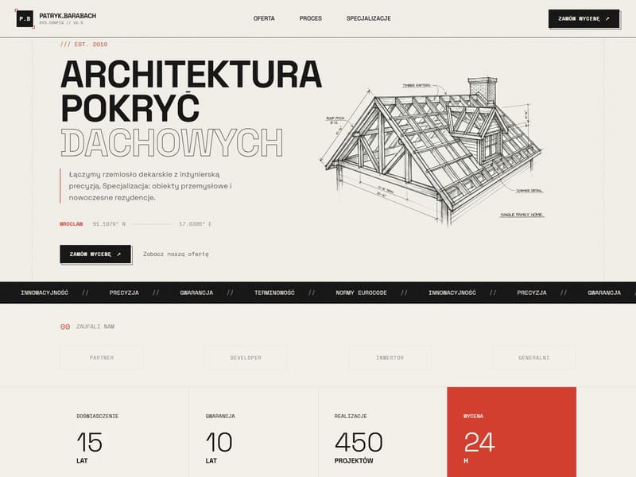

Dzisiaj
Lead trafia z formularza do skrzynki, ktoś przepisuje go do CRM, klient dostaje odpowiedź z opóźnieniem, a status zamówienia trzeba sprawdzać w kilku systemach.
Formularz ma trafić do CRM, płatność uruchomić właściwy proces, a zespół nie powinien ręcznie przepisywać tych samych danych w kilku miejscach.
Projektuję połączenia, które mają jasno określony kierunek, obsługę błędów i sposób sprawdzenia, czy informacja dotarła.
Lead trafia z formularza do skrzynki, ktoś przepisuje go do CRM, klient dostaje odpowiedź z opóźnieniem, a status zamówienia trzeba sprawdzać w kilku systemach.
Dane mają jedno źródło prawdy, kolejne kroki uruchamiają się we właściwej kolejności, a zespół widzi, co się stało również wtedy, gdy zewnętrzna usługa zwróci błąd.
Nowe zapytanie trafia do właściwego pipeline’u razem z danymi, które są potrzebne do dalszej rozmowy.
Newsletter, e-mail transakcyjny lub powiadomienie uruchamia się po realnym zdarzeniu, nie po ręcznym eksporcie.
Status płatności może aktualizować zamówienie, dostęp do usługi lub informację przekazywaną zespołowi.
Łączę aplikacje, bazy i narzędzia zespołu tam, gdzie dane nie powinny kończyć się w osobnych silosach.
Ustalamy, co dzieje się przy błędzie, braku odpowiedzi lub duplikacie — szczególnie w procesach ważnych biznesowo.
Integracje API od 400 PLN netto. Wycena zależy od systemów, danych, kierunku synchronizacji i scenariuszy, które trzeba zabezpieczyć.

Opisujemy zdarzenie startowe, dane do przekazania, system docelowy i warunek sukcesu. Dopiero na tej podstawie wybieram endpoint, webhook albo etap pośredni — bez budowania automatyzacji, której nikt nie będzie umiał później sprawdzić.
Ustalamy system źródłowy, odbiorcę danych, moment uruchomienia i konkretny efekt, który ma pojawić się po integracji.
Sprawdzam dokumentację, zakres uprawnień, format danych oraz ograniczenia API. Dzięki temu wiadomo, co jest możliwe zanim powstanie kod.
Wdrażam przepływ i testuję sukces, błąd, brak odpowiedzi oraz sytuacje, w których dane mogłyby trafić podwójnie.
Uruchamiamy integrację, weryfikujemy pierwsze rzeczywiste zdarzenia i przekazuję jasną informację, co warto obserwować dalej.
Dobry początek, gdy ręczne przekazywanie leadów, statusów lub zamówień powoduje opóźnienia i błędy. Najpierw automatyzujemy najważniejsze miejsce.
Ma sens, kiedy potrzebne są kolejne systemy, monitoring i dodatkowe reguły. Dzielimy pracę tak, aby każdy etap dawał użyteczny efekt i nie zwiększał chaosu.
Napisz, jakie narzędzia chcesz połączyć, gdzie dziś zatrzymują się dane i co ma wydarzyć się automatycznie. Jeśli masz dokumentację API lub przykładowy scenariusz, dołącz go do wiadomości.
Masz przepływ do usprawnienia? Wyślij sygnał.
Ustalmy, gdzie dane powinny trafić i jak potwierdzić wynik.
Tak, jeśli systemy udostępniają odpowiedni interfejs albo bezpieczny sposób wymiany danych. Najpierw ustalamy właściciela danych, kierunek synchronizacji i punkt startu automatyzacji.
Proste integracje zaczynają się od 400 PLN netto. Wycena zależy od liczby systemów, danych, scenariuszy błędów, dostępów i tego, czy potrzebny jest monitoring po uruchomieniu.
Sprawdzam webhooki, eksporty, dedykowany endpoint albo bezpieczny etap pośredni. Jeśli rozwiązanie byłoby kruche lub nieuzasadnione kosztowo, powiem to przed rozpoczęciem prac.
Dla krytycznych przepływów ustalamy rozpoznawalny stan błędu, możliwość ponownej próby i sposób weryfikacji, czy dane dotarły do właściwego systemu.
Ustalamy minimalny potrzebny zakres uprawnień i sposób przekazania dostępu. Po wdrożeniu dostępy można ograniczyć lub odwołać zgodnie z przyjętym procesem.
Czekam na dane. Opisz parametry misji, a otrzymasz strategię techniczną.
Ostatnia aktualizacja: Styczeń 2026
Dane z formularza są wykorzystywane wyłącznie do obsługi Twojego zapytania. Administratorem danych jest Paweł Dominiak, działający pod nazwą DominDev; kontakt: contact@domindev.com.
Przetwarzane mogą być dane podane w formularzu: imię lub nazwa, adres e-mail, treść wiadomości, wybrana usługa, budżet i zgoda RODO. Służą one do udzielenia odpowiedzi, obsługi projektu i zapewnienia bezpieczeństwa formularza.
Infrastruktura strony i ochrona przed nadużyciami korzystają z Cloudflare, a wysyłka formularza z Resend. Masz prawo dostępu do danych, ich sprostowania, usunięcia, ograniczenia przetwarzania, sprzeciwu i cofnięcia zgody. W sprawach danych napisz na contact@domindev.com.
Strona nie używa marketingowych cookies ani profilowania. Może korzystać wyłącznie z technicznych mechanizmów niezbędnych do działania oraz anonimowej, zbiorczej statystyki odwiedzin Cloudflare Web Analytics.